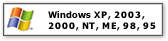

KeePass Password Safe
KeePass Password Safe |
Here are the "selling points" of KeePass. To get a first impression, you can also have a
look at some of the screenshots.
Highly encrypted databases
- KeePass supports the Advanced Encryption Standard (AES) and the Twofish algorithms to encrypt its password databases.
- Both ciphers are regarded as very secure by the cryptography community. Banks are using these algorithms, too.
- Even if you would use all computers in the world to attack
one database, decrypting it would take longer than the age of the universe.
- Even quantum computers won't help that much. The algorithms are symmetric so its complexity would
be reduced a bit, anyway, the sun will go nova before you have decrypted the database.
- The complete database is encrypted, not only the password fields. So your usernames, notes, etc. are hidden, too.
- SHA-256 is used as password hash. SHA-256 is a 256-bit cryptographically secure one-way hash
function. Your master password is hashed using this algorithm and its output is used as key for
the encryption algorithms (AES and Twofish).
- SHA-256 is based on the design of SHA-1 (160-bit), its precedessor. No attacks are known
against SHA-1 and the SHA-2 familiy (256-, 384- and 512-bits), in contrast to many other algorithms
like MD5 or MD4.
- In-memory protection: your passwords are encrypted while KeePass is running, so even if Windows caches the KeePass
process to disk, this wouldn't reveal the passwords anyway.
- Also see the security information page.
Support of master passwords and key-disks
- One master password decrypts the complete database.
- Alternatively you can use key-disks. Key-disks provide better security than
master passwords in most cases. You only have to carry the key-file with you, for example
on a floppy disk, or you can burn it on CD. Of course, you shouldn't lose this disk then.
- Also see keys information page.
Runs on all Windows operating systems and doesn't need to be installed
- KeePass doesn't, in contrast to many other applications, use any functions that require
the latest Windows operating system, such like theming on XP or like a .NET application requiring a .NET
framework.
- The application doesn't need to be installed. The KeePass development team provides you
an installer which automates creating links in the startmenu etc., but you also can download
the binary zip package which contains only the main executable, which runs fine without installing
anything.
- KeePass doesn't store anything on your system. The program doesn't create any new
registry keys and it doesn't create any initialization files (ini) in your Windows directory.
Deleting the KeePass directory (in case you downloaded the binary zip package) or using the
uninstaller (in case you downloaded the installer package) leaves no trace of KeePass on your
system.
- KeePass runs, without downloading any additional libraries, on Windows 95, 98, 98SE,
ME, NT, 2000, XP, 2003
- 1
- Even a 100% compatible version for the PocketPC is available (visit
KeePass PocketPC page).
Export password list to TXT, HTML, XML or CSV files
- The password list can be exported to various formats like TXT, HTML, XML and CSV.
- The XML output can be easily used in other applications.
- The CSV output is fully compatible with most other password safes like the commercial
closed-source Password Keeper and the closed-source Password Agent, also the CSVs
can be imported in spreadsheet applications like Microsofts Excel or OpenOffice's Calc.
- The HTML output uses cascading style sheets (CSS) to format the table, so you can
easily change the layout.
Import from CSV, CodeWallet(Pro) TXT and Password Safe v2 TXT files
- KeePass uses the common CSV export format of various passwords safes like Password Keeper and
Password Agent. Exports from these programs can be easily imported to your KeePass databases.
- KeePass can parse and import TXT outputs of CodeWalletPro, a commercial closed-source password safe.
- KeePass can import TXT files created by Bruce Schneier's Password Safe v2.
Easy database transfer
- A database consists of only one file that can be transferred from one computer to another easily.
Support of password groups
- You can create, modify and delete groups, in which passwords can be sorted in.
- The groups can be arranged as a tree, so a group can have subgroups, those subgroups can have
subgroups themselves, etc.
- Also see this screenshot.
Time fields support
- KeePass supports time fields: creation time, last modification time, last access time and
expiration time.
Drag-n-drop support
- All fields, title, username, password, URL and notes can be drag-n-dropped into other
windows.
Fast copy fields to the Windows clipboard
- Just double-click on any field to copy it to the Windows clipboard.
Searching and sorting
- You can search for specific entries in the databases.
- To sort a password group, just click on one of the column headers in the password list, you can
sort by any column.
Multi-language translation support
- KeePass can be translated into other languages very easily.
- Currently 12 different languages are available.
- See the translations page.
Strong random password generator
- KeePass can generate strong random passwords for you.
- You can define the possible output characters of the generator (number of characters and type).
- Random seeding through user input: mouse movement and random keyboard input.
Low memory requirement
- KeePass uses very few memory, only the memory really needed is allocated.
- No unnecessary memory- and cpu-consuming things like any animations are used.
Open-Source!
- KeePass free and you have full access to its source code!
- Open-Source prevents from backdoors. You can have a look at its source code and
compile it yourself.
- You can yourself check if the security is implemented correctly, you can, if you want,
use any other encryption algorithm.
- Opening the sources also encourages other people to port the application to
other systems (PocketPC version already in development) or write translations.
- KeePass is OSI Certified Open Source Software. OSI Certified is a certification mark of the Open Source Initiative.

1 The Windows logo and "Windows" are trademarks and are copyright © Microsoft Corporation.
{kind=link}